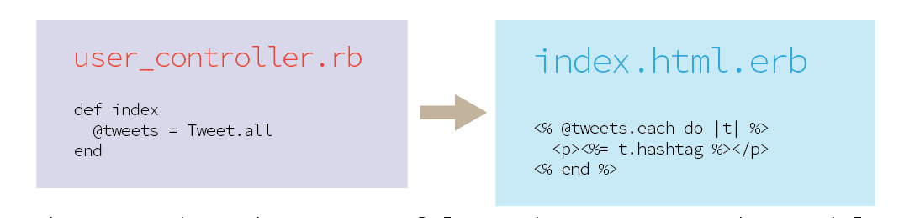
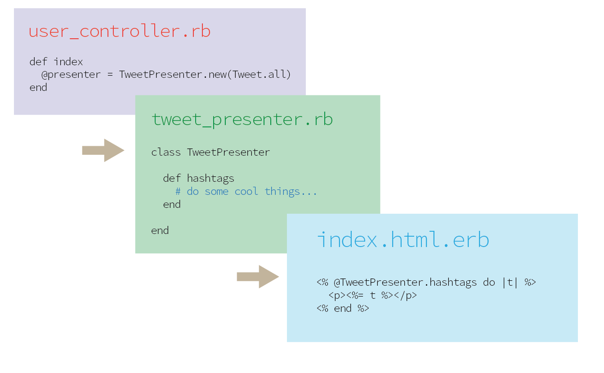

the benefit of a presenter object
Jul 01, 2015
I've heard about Presenter Objects but hadn't seen a need for them until recently. Most of the time I make a specific query on Active Record as simple and direct as passing my Model unfiltered to the View and putting some logic into the controller (or view).
Controller to View.
 No good place for complex logic. The view has direct, unfiltered access to the Model.
But I recently wanted to add some complex logic to which hashtags were presented on the #index. Since all this view logic was only specific to the #index it didn't feel right to put methods on the model. Sure, I could have put it in the view, but that is the path to duplication. I also know that I controllers should remain skinny because their role is vital as a traffic cop. So, I didn't want to make my Controller fat. This is when the concept of a Presenter Class made sense. It's a midway point to create methods that are specific to the view.
Controller to Presenter to View
 Put complex logic in the Presenter to keep controller skinny. The view also stays maintainable because it is working on filtered content.
So instead of sending a @tweets instance to the view, send a @presenter instance to communicate there are extra methods. This means the controllers and views stay clean and do their jobs.